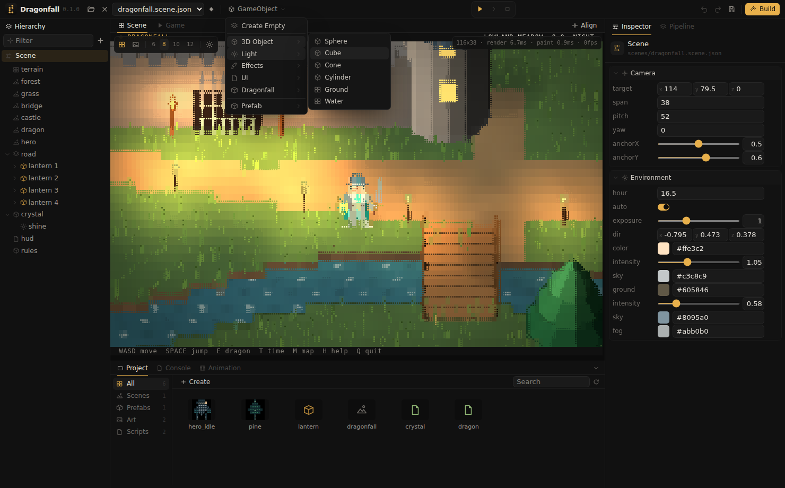
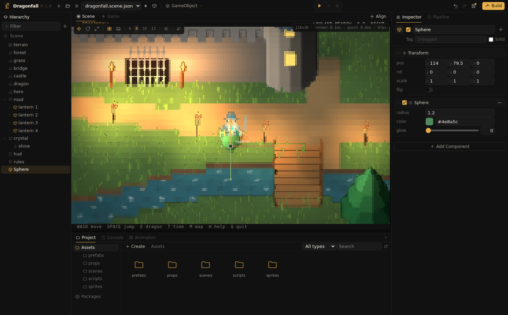
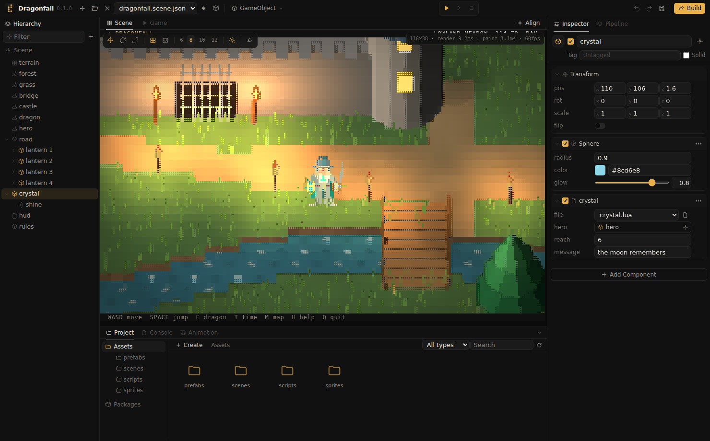

GameObjects and components
A scene consists of GameObjects. Each GameObject has a name, a transform and a list of components; the components define what the object is and does. An object can carry any number of components, including several of the same kind.
Creating objects

The GameObject menu in the toolbar creates objects. With an object selected, the new object becomes its child; otherwise it is created at the top level, at the center of the view.
| Entry | Creates |
|---|---|
| Create Empty | An object with only a transform, for grouping and for scripts. |
| Camera | A camera object, see Cameras. |
| 3D Object | Cube, Sphere, Cylinder, Cone, Plane, Quad, Ground and Water. |
| Light | Point, spot and directional lights. |
| Effects | Particle System, see Particles. |
| UI | Text and Sprite. |
| Model | An instance of a model of the project, see Models. |
| Prefab | An instance of a prefab of the project, see Scenes and prefabs. |
Code modules add their own entries; the Dragonfall module adds a Dragonfall submenu with its terrain, forest, grass, castle, bridge, dragon, knight and HUD. Submenus open on click or when the pointer rests on them; the arrow keys, Enter and Esc navigate the menu.
Transform
Every object has a transform: a position in world units, a rotation in degrees around X, Y and Z (Z points up), a scale per axis, and flip, which mirrors sprites to face left. The values in the Inspector are local: relative to the parent object, or to the world for objects at the top level.
The Scene view's transform tools change these values by dragging; see View toolbar.
| Tool | Key | Handles |
|---|---|---|
| Move | W | An arrow moves along its axis; the square in the middle moves along the ground. |
| Rotate | E | The ring turns around the up axis; the red and green handles tilt around X and Y. |
| Scale | R | A handle stretches one axis; the square in the middle scales evenly. Dragging right or up enlarges, left or down shrinks. |
Parents and children
An object can contain other objects. A child moves, rotates and scales with its parent: a lantern carries its flame and light, a hand carries a sword, a vehicle carries its camera. In the Hierarchy, dragging a row onto another row makes it a child, and dropping it on Scene moves it to the top level. Reparenting keeps the object's place in the world; its local transform is recalculated. Scripts reparent with obj.parent = other or obj:set_parent(other), and read world and local values separately, see Transform in the Lua API.
Cameras
A Camera component makes its object the game camera. The object's position is the point the camera looks at; its rotation around Z turns the view. The component sets the remaining parameters:
| Property | Meaning |
|---|---|
span | World units across the width of the view. Smaller values zoom in. |
pitch | Angle above the ground in degrees; 90 looks straight down. |
anchorX, anchorY | Where the target point appears on screen, from 0 to 1 in each direction. |
- The game uses the first enabled camera on a visible object, in Hierarchy order. Disabling a camera component, or hiding its object, switches to the next one.
- As a child of another object, the camera moves with it. A camera that is a child of the player is not moved by the player's
followsetting. - New projects, new scenes and the Dragonfall template contain a Main Camera object. A scene without a camera shows No camera in the Game view and in builds.
- In the Scene view, the area the camera shows is outlined in amber. Align moves the camera to the current Scene view.
- Scripts reach the camera through the
cameraglobal;camera.objectis the camera's GameObject. See Camera in the Lua API.
The Inspector

- The header contains the name, the visibility checkbox, the tag, which scripts search with
find_by_tag, and Solid, which makes the player collide with the object's bounds. - Transform follows the header.
- Each component is a card with a checkbox that disables it while keeping its settings. The ⋮ button and the card's context menu provide Reset, Move Up, Move Down and Remove Component. Cards can be reordered by dragging their header.
- Add Component searches all component kinds and the project's Lua scripts, grouped by category. Typing filters the list; the arrow keys and Enter select; a new script can be created from the search text.
Prefab instances cannot receive new components; edit the prefab, or unpack the instance first.
Property names
A component's properties are named after its kind: light.radius, box.size. A second component of the same kind on one object is numbered: the second light is light#2 and its radius light#2.radius. Animation tracks, prefab overrides, references and Lua use these names. A component keeps its name for good: removing or reordering the first light leaves the second one light#2, so everything that points at it still does. A short name such as radius is accepted when only one component of the object has that property.
References

Reference properties point to another object, a component or an asset instead of holding a value. The Inspector shows them as slots.
- Object slots accept a row dragged from the Hierarchy.
- Component slots accept a component card dragged by its header, or an object, in which case its first component of the required kind is used.
- Asset slots (prefab, texture, material, model, sprite, sound, controller, script) accept a tile dragged from the Project window.
- The button at the end of a slot lists every suitable target; None clears the slot.
- A slot whose target has been deleted shows Missing in red.
The toggle component's target and the object(), component() and prefab() fields of Lua scripts are references.
How references are stored
Assets are named by the GUID in their .meta file. Objects inside a scene or prefab are named by a file id ("fid" in the file), unique within that file:
| Value | Points at |
|---|---|
"5104…" | An object of the same scene. |
"5104…/3" | Object 3 inside the prefab instanced as object 5104…. |
"~3" | Object 3 of the prefab the reference itself belongs to. |
"…#light" | A component of that object, by its key. |
New objects get random 53 bit file ids, so two people who add objects on different git branches can merge without clashing ids. References survive renaming and moving objects, saving and loading, duplicating (references inside the copy point at the copies), saving as a prefab and unpacking an instance.
Built in components
All properties of every component are listed in the Component reference.
| Kind | Name | Purpose |
|---|---|---|
box, blob, cylinder, cone | Cube, Sphere, Cylinder, Cone | Solid shapes; the cube accepts a material. |
plane, quad | Plane, Quad | A flat rectangle on the ground and an upright one facing the camera; both accept materials. |
mesh | Mesh | An imported OBJ model, see Models. |
ground, water | Ground, Water | Terrain patches; water has animated glints. |
camera | Camera | The game camera, see Cameras. |
light | Point, Spot and Directional Light | Light sources, see Rendering. |
emitter | Particle System | Particle effects, see Particles. |
label, sprite | Text, Sprite | Text and sprites drawn as whole terminal cells. |
audio_source | Audio Source | Plays a sound, see Audio. |
box_collider, circle_collider, mesh_collider, rigidbody | Colliders, Rigidbody | Collision and physics, see Physics. |
animator | Animator | Plays clips as states of a controller, see Animation. |
player | Player | Keyboard movement, jumping and camera following. |
toggle, daynight, quit | Toggle, Day Night, Quit Key | Switch a property, change the time of day, or end the game on a key. |
paint | Paint | Strokes made with the Braille brush. |
script | Script | A Lua script, see Lua scripting. |
draw hook can also draw, without Go.